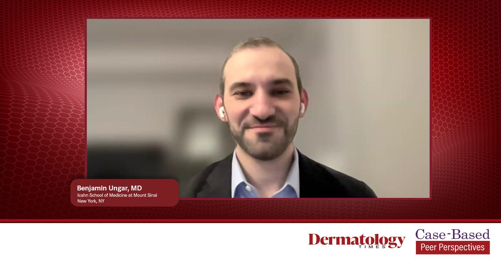

FACTUM.RU Beauty · 14.10.2026

Случай 1: Оценка психосоциального бремени и реалистичных целей у пациента с алопецией
Источник: https://www.dermatologytimes.com/view/case-1-assessing-psychosocial-burden-and-realistic-goals-in-a-patient-with-alopecia-areata